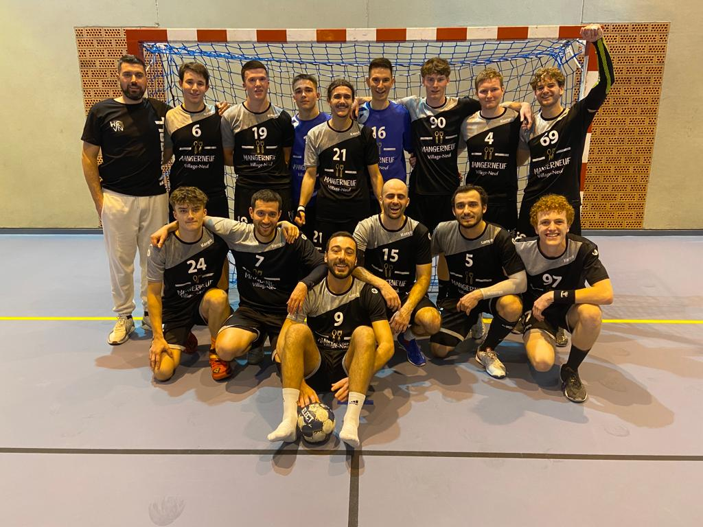
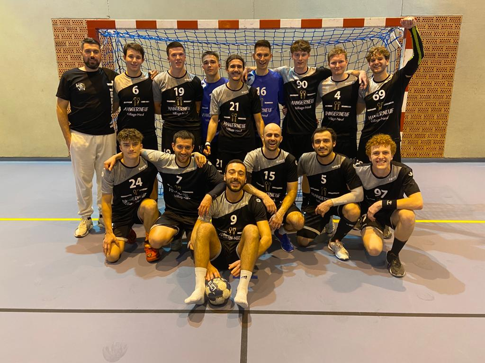
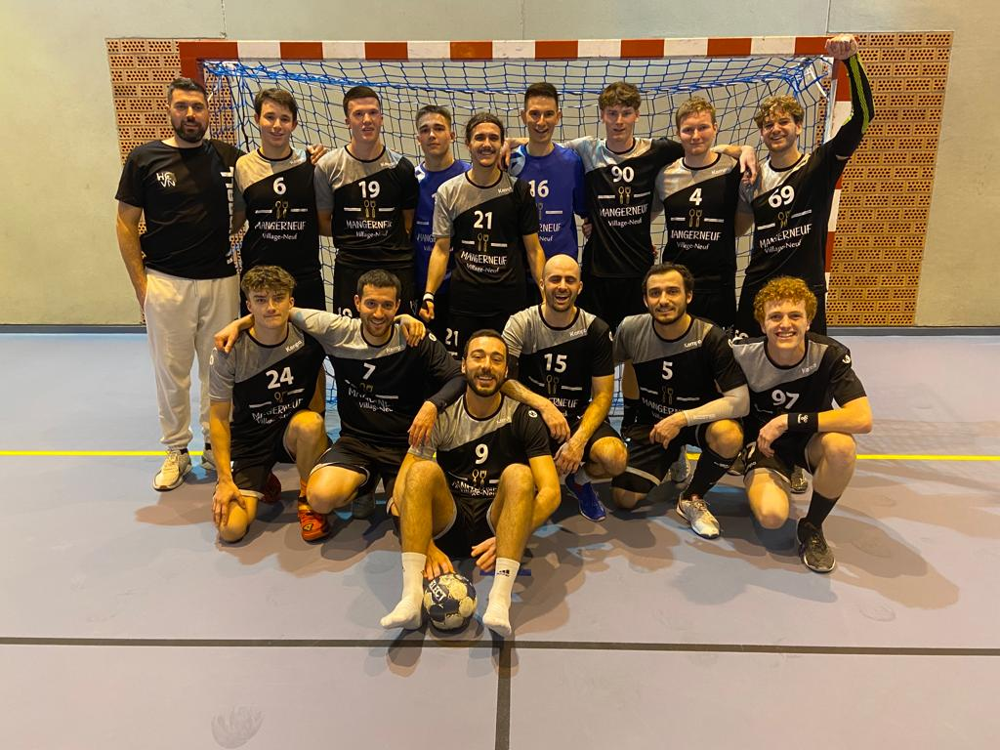

Débuter par le foot comme la majorité des garçons, j'ai trouvé ma voie danb le handball, j'ai débuter lorsque j'avais 10ans, inciter par mes parents à reprendre le sport apres une blessure de longue durée. j'ai commencé ce sport au Handball Club de Village-Neuf, où j'ai pu faire mes premiers pas dans une équipe en départemental. L'année suivante je passait au niveau au dessus, cependant l'athmposphere qui raiganait ne me parrassait pas optimal, c'est ainsi que j'ai pris la decision de partir dans un club suisse. Le TV KleinBasel m'a ouvert ses portes et m'a permis d'acquerir des competences autant sur le plan sportif que linguistique. Evoluant dans un championnat de Pré-national, nous avons parcourus de nombreux kilometres en train. C'est a ce moment là que je me suis réelement épanouis. Revenus apres une grande décision du coté francais de la frontière, j'ai achevé mon cycle -18 sur mes terres au seins du HCVN. Notre équipe s'étant qualifier lorsque je n'était pas encore là, j'ai eu la chance 'évoluer en inter-départemental (autant dire que les heures en minibus pour faire parfois 2h de route étaient longues) à un niveau assez élever. Soufllant sur ma 18ème bougies en 2023, j'ai la chance d'évoluer depuis septembre dans l'équipe de senior régional du club, des matchs plus intenses et plus important.
